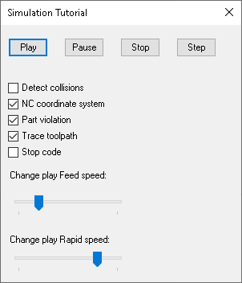

This tutorial shows the key points of simulation in ESPRIT. The simulation is accessed through the Document.Simulation object. Running the simulation is quite easy - all you have to do is call the Play method.
In this tutorial we will create a form that allows to use the basic simulation commands.
Arrange the controls on the form and align them if you like. When you are finished, your form should look similar to the one below.

Set the properties of each control to the following values:
| Object Type | Name | Properties |
| UserForm | frmSimulationTutorial | Caption = SimulationTutorial |
| Label | lblFeedSpeed | Caption = Change play Feed speed: |
| Label | lblRapidSpeed | Caption = Change play Rapid speed: |
| CheckBox | chCollisions | Caption = Detect collisions |
| CheckBox | chNCCoordinateSystem | Caption = NC coordinate system |
| CheckBox | chPartViolation | Caption = Part violation |
| CheckBox | chStopCode | Caption = Stop code |
| CheckBox | chTraceToolpath | Caption = Trace toolpath |
| ScrollBar | sbFeed | |
| ScrollBar | sbRapid | |
| CommandButton | cmdPlay | Caption = Play |
| CommandButton | cmdPause | Caption = Pause |
| CommandButton | cmdStop | Caption = Stop |
| CommandButton | cmdStep | Caption = Step |
Assosiate the following event procedures with the form:
- Play Button - start simulation or resume it after pause:
private void OnPlayButtonClick(object sender, EventArgs e)
{
Document.Simulation.Play();
}
- Pause Button - temporarily stop the simulation:
private void OnPauseButtonClick(object sender, EventArgs e)
{
Document.Simulation.Pause();
}
- Stop Button - stop the simulation and exit the simulation mode:
private void OnStopButtonClick(object sender, EventArgs e)
{
Document.Simulation.Stop();
}
- Step Button - move simulation to the next step:
private void OnStepButtonClick(object sender, EventArgs e)
{
Document.Simulation.Step();
}
Before running the tutorial, create new or open a file that has several operations on it.
ESPRIT API allows the user to change the simulation color of each cutting tool. The following code automatically changes the SimulationColor property of each tool:
private void SimulateWithChangingColor()
{
Random rnd = new Random();
var tools = Document.Tools as EspritTools.Tools;
foreach (EspritTechnology.Tool technology in tools)
{
if (technology == null)
{
continue;
}
System.Drawing.Color color = System.Drawing.Color.FromArgb(0, 0, 0);
var value = 255 - 100 * rnd.Next(rnd.Next(2));
switch (rnd.Next(3))
{
case 0:
color = System.Drawing.Color.FromArgb(value, 0, 0);
break;
case 1:
color = System.Drawing.Color.FromArgb(0, value, 0);
break;
case 2:
color = System.Drawing.Color.FromArgb(0, 0, value);
break;
}
technology.SimulationColor = (int)ColorHelper.ColorToUInt(color);
}
}
public static uint ColorToUInt(System.Drawing.Color color)
{
var value = (uint)((color.A << 24) | (color.B << 16) |
(color.G << 8) | color.R);
return value;
}
It is also possible to manage "Collision detection"/"NC coordinate system"/"Part violation"/"Stop code"/"Trace toolpath" state and simulation feed and rapid speed through the API.
private void OnCollisionsCheckBoxCheckedChanged(object sender, EventArgs e)
{
Document.Simulation.CollisionDetection = _collisionsCheckBox.Checked;
}
private void OnNCCoordinateSystemCheckBoxCheckedChanged(object sender, EventArgs e)
{
Document.Simulation.NCCoordinateSystem = _ncCoordinateSystemCheckBox.Checked;
}
private void OnPartViolationCheckBoxCheckedChanged(object sender, EventArgs e)
{
Document.Simulation.PartViolationDetection = _partViolationCheckBox.Checked;
}
private void OnStopCodeCheckBoxCheckedChanged(object sender, EventArgs e)
{
Document.Simulation.StopCode = _stopCodeCheckBox.Checked;
}
private void OnTraceToolpathCheckBoxCheckedChanged(object sender, EventArgs e)
{
Document.Simulation.TraceToolpath = _traceToolpathCheckBox.Checked;
}
Document.Simulation.PlayFeedSpeed = speed;
Document.Simulation.PlayRapidSpeed = speed;
Note that the value for feed speed must be in range [-0.2 ; 0.8] and for rapid speed - in range [-0.8; 0.2].